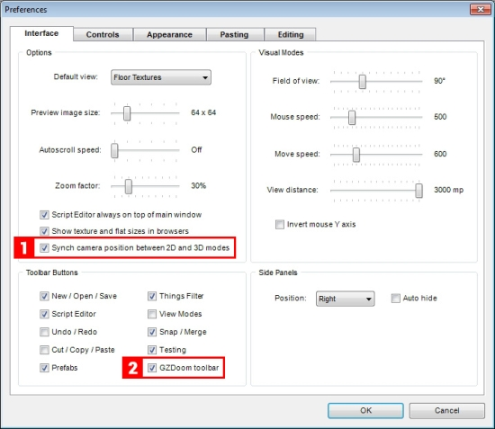
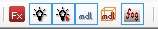
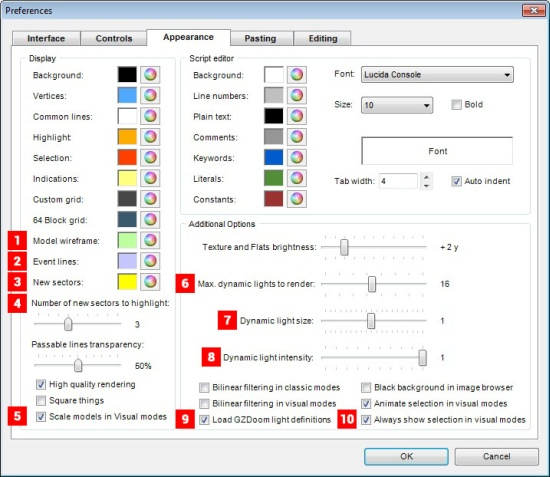

There are several new options avaliable in GZDoom Builder's Preferences window (F5):
|  | 1. Sync camera position between 2D and 3D modes: when enabled, GZDoom Builder will center 2D-mode on Visual Camera position when you leave Visual Mode, and will place Visual Camera at cursor position when you toggle from 2D-mode to Visual Mode (unless you have Visual Mode camera thing in your map). 2. GZDoom toolbar: when enabled, GZDoom toolbar () will be shown in main editing window.
|
|  | 1. Model wireframe color: lets you choose a color, which is used to render model wireframe in 2D-mode. 2. Maximum dynamic lights to render: lets you choose how many dynamic lights to render in visual mode. Decrease this to improve performance when Dynamic Lights Rendering is on. Possible values are [1..32]. 3. Dynamic light size: this option mimics GZDoom's "light size" option. 4. Dynamic light intensity: this option mimics GZDoom's "light intensity" option. |